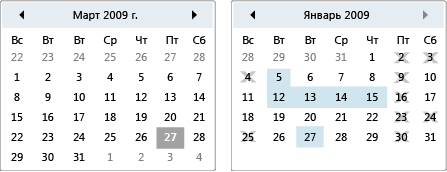

Календарь
Календарь позволяет пользователю выбрать дату с помощью визуального отображения календаря.
Объект Calendar элемент управления может использоваться сама по себе или в составе раскрывающегося списка DatePicker элемента управления. Дополнительные сведения см. в разделе DatePicker.
На следующем рисунке показаны два Calendar элементы управления, одна с выбранными и затемненными датами и без.

Элементы управления календаря
Следующая таблица содержит сведения о задачах, которые обычно связаны с Calendar.
| Задача | Реализация |
|---|---|
| Укажите даты, не могут быть выбраны. | Используйте свойство BlackoutDates. |
| У Calendar отображения месяц, год или десятилетие. | Задайте DisplayMode свойство месяц, год или десятилетие. |
| Укажите, является ли пользователь может выбрать дату, диапазон дат или несколько диапазонов дат. | Используйте SelectionMode. |
| Укажите диапазон дат, Calendar отображает. | Используйте DisplayDateStart и DisplayDateEnd свойства. |
| Укажите, выделяется ли текущая дата. | Используйте свойство IsTodayHighlighted. По умолчанию IsTodayHighlighted является true. |
| Изменить размер Calendar. | Используйте Viewbox или задать LayoutTransform свойства ScaleTransform. Обратите внимание, что если задать Width и Height свойства Calendar, фактический календарь не изменять свой размер. |
Calendar Элемент управления предоставляет основные возможности перемещения с помощью мыши или клавиатуры. В следующей таблице перечислены с помощью клавиатуры.
| Сочетание клавиш | DisplayMode | Действие |
|---|---|---|
| СТРЕЛКА | Month | Изменения SelectedDate свойство Если SelectionMode не задано значение None. |
| СТРЕЛКА | Year | Изменяет значение месяца для DisplayDate свойство. Обратите внимание, что SelectedDate остается неизменным. |
| СТРЕЛКА | Decade | Изменяет значение года для DisplayDate. Обратите внимание, что SelectedDate остается неизменным. |
| SHIFT + СТРЕЛКА | Month | Если SelectionMode равно SingleDate или None, расширяет спектр выбранных дат. |
| ГЛАВНАЯ | Month | Изменения SelectedDate первый день текущего месяца. |
| ГЛАВНАЯ | Year | Изменяет значение месяца для DisplayDate к первому месяцу года. SelectedDate Остается неизменным. |
| ГЛАВНАЯ | Decade | Изменяет значение года для DisplayDate на первый год десятилетия. SelectedDate Остается неизменным. |
| END | Month | Изменения SelectedDate до последнего дня текущего месяца. |
| END | Year | Изменяет значение месяца для DisplayDate последний месяц года. SelectedDate Остается неизменным. |
| END | Decade | Изменяет значение года для DisplayDate за прошлый год десятилетия. SelectedDate Остается неизменным. |
| CTRL + СТРЕЛКА ВВЕРХ | Любой | Переходит к следующему большего размера DisplayMode. Если DisplayMode уже Decade, никаких действий. |
| CTRL+СТРЕЛКА ВНИЗ | Любой | Переходит к следующему меньшего размера DisplayMode. Если DisplayMode уже Month, никаких действий. |
| ПРОБЕЛ или ввод | Year или Decade | Коммутаторы DisplayMode для Month или Year представленный элемент, имеющий фокус. |